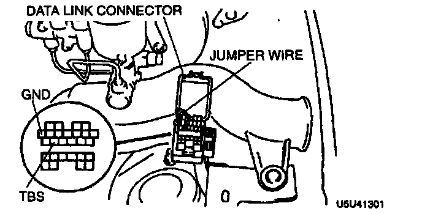

With Scan Tool
Clearing DTCs ProcedureCaution: Connecting the wrong data link connector terminals may possibly cause a malfunction. Carefully connect the specified terminals only.

1. Connect the TBS terminal to GND at the data link connector.
2. Turn the ignition switch to ON.
3. Output all memorized codes. (ABS warning light flashing.)
4. After verifying that the first code is repeated, depress the brake pedal 10 times at intervals of less than one second (1 sec.). Diagnostic trouble codes cannot be cleared if the following occur.
1. If intervals of depressing the brake pedal exceed one second (1 sec.)
2. Brake switch has failed
5. Turn the ignition switch to OFF to finish the procedure.
Note: After repairing the ABS wheel-speed sensor or pump motor, the ABS warning light may not go off when ignition is switched to ON. In this case, turn the ignition switch to OFF, then back ON, and drive the vehicle at a speed of more than 10 km/h (6.2 mph) then the ABS warning light goes off.